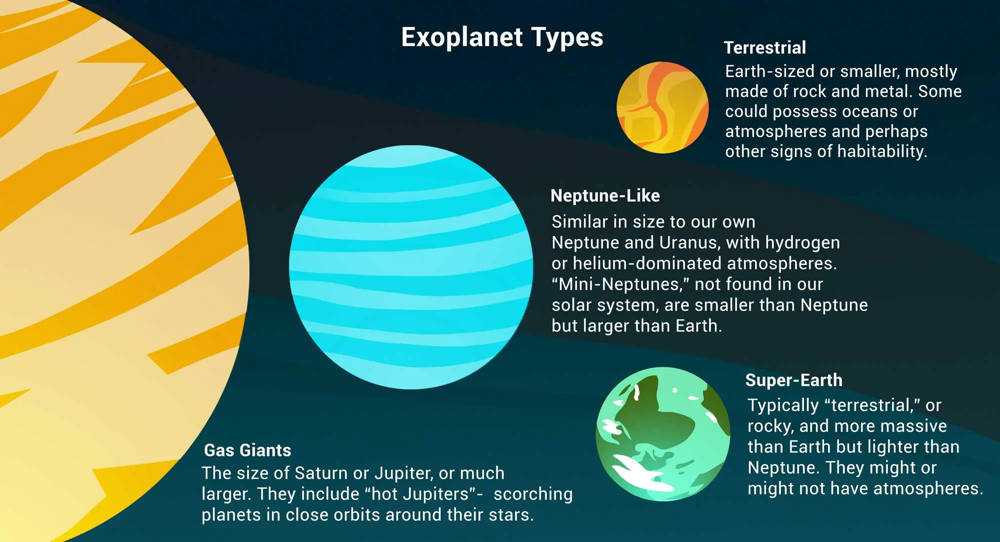

Exoplanets
What are Exoplanets?
Exoplanets, or extrasolar planets, are celestial bodies that orbit stars other than our Sun. Since the discovery of the first exoplanets in the 1990s, astronomers have identified thousands of these distant worlds, revealing a rich diversity of planetary systems.
Types of Exoplanets
Hot Jupiters
Gas giants that orbit very close to their parent stars, resulting in extremely high surface temperatures.
Super-Earths
Planets with a mass larger than Earth's but significantly smaller than that of Uranus or Neptune. They may have rocky surfaces or thick atmospheres.